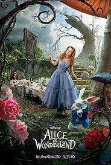
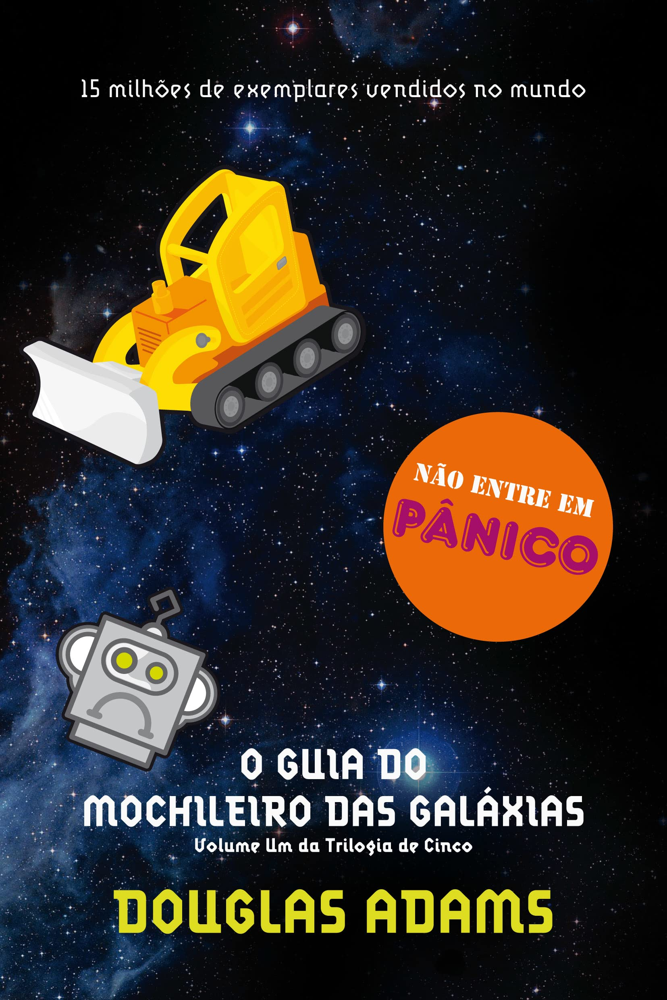

Harry Potter e a Pedra Filosofal

Sinopse
Harry Potter nunca tinha ouvido falar em Hogwarts até o momento em que as CARTAS começam a aparecer no capacho do número 4 da rua dos Alfeneiros. Endereçadas com um LACRE PÚRPURA, elas são repidamente confiscadas por seus tios TERRÍVEIS. E então, no décimo primeiro aniversário de Harry, um homem GIGANTESCO com olhos luzindo como besouros negros chamado RÚBEO HAGRID entra intempestivamente com uma notícia
ASSOMBROSA : Harry Potter é um bruxo e tem uma vaga na ESCOLA DE MAGIA E BRUXARIA DE HOGWARTS. Uma aventura inacreditável está para começar!
Fonte:Google Books
| Data da primeira publicação | Autor | Idiaoma Original | Gêneros |
|---|---|---|---|
| 26 de Junho de 1997 | J.K Rowling | Romance Literatura Infantil,Literatura fantástica, Alta fantasia |
Senhor dos Anéis: A Socoiedade do Anel

Sinopse
A Sociedade do Anel O volume inicial de O Senhor dos Anéis, lançado originalmente em julho de 1954, foi o primeiro grande épico de fantasia moderno, conquistando milhões de leitores e se tornando o padrão de referência para todas as outras obras do gênero até hoje.A imaginação prodigiosa de J.R.R.Tolkien e seu conhecimento profundo das antigas mitologias da Europa permitiram que ele criasse um universo tão complexo e convincente quanto o mundo real.A Sociedade do Anel começa no Condado,a região rural do oeste da Terra-média onde vivem os diminutos e pacatos hobbits. Bilbo Bolseiro, um dos raros aventureiros desse povo, cujas peripécias foram contadas em O Hobbit, resolve ir embora do Condado e deixa sua herança nas mãos de seu jovem parente Frodo.
Fonte:Google Books
| Data da primeira publicação | Autor | Idiaoma Original | Gêneros |
|---|---|---|---|
| 25 de novembro de 2019 | J.R.R. Tolkien | Literatura fantástica |
Percy Jackson e o Ladrão de Raios

Sinopse
Primeiro volume da saga Percy Jackson e os olimpianos, O ladrão de raios esteve entre os primeiros lugares na lista das séries mais vendidas do The New York Times. O autor conjuga lendas da mitologia grega com aventuras no século XXI. Nelas, os deuses do Olimpo continuam vivos, ainda se apaixonam por mortais e geram filhosmetade deuses, metade humanos, como os heróis da Grécia antiga. Marcados pelo destino, eles dificilmente passam da adolescência.Poucos conseguem descobrir sua identidade. O garoto-problema Percy Jackson é um deles. Tem experiências estranhas em que deuses e monstros mitológicos parecem saltar das páginas dos livros direto para a sua vida. Pior que isso: algumas dessas criaturas estão bastante irritadas. Um artefato precioso foi roubado do Monte Olimpo e Percy é o principal suspeito. Para restaurar a paz, ele e seus amigos, terão de fazer mais do que capturar o verdadeiro ladrão: precisam elucidar uma traição mais ameaçadora que fúria dos deuses.
Fonte:Google Books
| Data da primeira publicação | Autor | Idiaoma Original | Gêneros |
|---|---|---|---|
| 28 de junho de 2005 | Rick Riordan | Mitologia grega, Romance, Ficção juvenil, Literatura fantástica, Alta fantasia |
Alice no Pais das Maravilhas
Sinopse
Há mais de 150 anos, a inocência e a curiosidade de uma pequena garota inglesa transformaram-se em "um dos maiores clássicos da literatura infantojuvenil". Alice no País das Maravilhas conta a história de uma menina que, ao avistar um Coelho vestindo relógio e colete, sem hesitar, entra, às pressas, dentro do esconderijo do novo amigo. Ao cair na profunda toca, em seu trajeto pela terra das fantasias, Alice conhece o Chapeleiro Maluco, a Rainha de Copas, o Gato de Cheshire, a Lagarta e diversos outros personagens que lhe possibilitam viver experiências únicas que se confundem entre o real e o imaginário.Nesse universo, ao diminuir e aumentar de tamanho, a garota desenvolve o exercício da empatia, cria um grande laço de amizade com um personagem considerado louco, aprende a conviver com as diferenças, bem como a vencer os seus próprios medos ao enfrentar a Rainha de Copas. Com isso tudo,aprende grandes lições sobre a vida, o que torna a leitura do livro instigante.E ainda mais apaixonante, devido às múltiplas possibilidades de interpretação de cada uma das aventuras eternizadas por Alice.
Fonte:Google Books
| Data da primeira publicação | Autor | Idiaoma Original | Gêneros |
|---|---|---|---|
| novembro de 1865 | Lewis Carroll | Literatura infantil, Literatura fantástica, Drama, Ficção juvenil, Ficção Absurdista, Fantástico |
O Guia do Mochileiro das Galáxias
Sinopse
Considerado um dos maiores clássicos da literatura de ficção científica, O Guia do Mochileiro das Galáxias vem encantando gerações de leitores ao redor do mundo com seu humor afiado. Este é o primeiro título da famosa série escrita por Douglas Adams, que conta as aventuras espaciais do inglês Arthur Dent e de seu amigoFord Prefect. A dupla escapa da destruição da Terra pegando carona numa nave alienígena, graças aos conhecimentos de Prefect, um E.T. que vivia disfarçado de ator desempregado enquanto fazia pesquisa de campo para a nova edição do Guia do Mochileiro das Galáxias, o melhor guia de viagens interplanetário. Mestre da sátira, Douglas Adams cria personagens inesquecíveis e situações mirabolantes para debochar da burocracia, dos políticos, da "alta cultura" e de diversas instituições atuais. Seu livro, que trata em última instância da busca do sentido da vida, não só diverte como também faz pensar.
Fonte:Google Books
| Data da primeira publicação | Autor | Idiaoma Original | Gêneros |
|---|---|---|---|
| 12 de outubro de 1979 | Douglas Adams | Ficção científica, Romance, Humor, Ficção científica cômica, Ficção humorística |